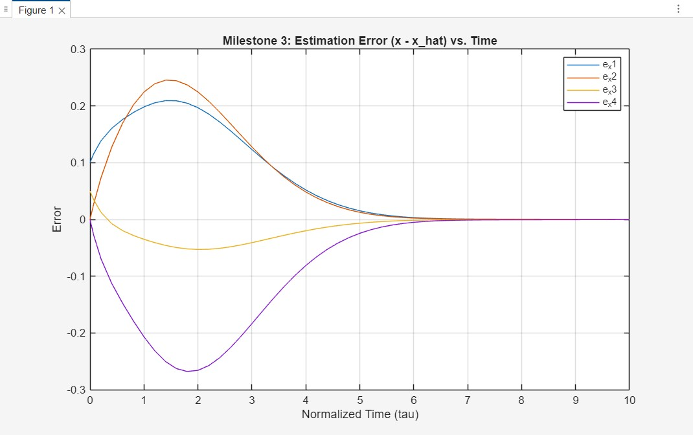
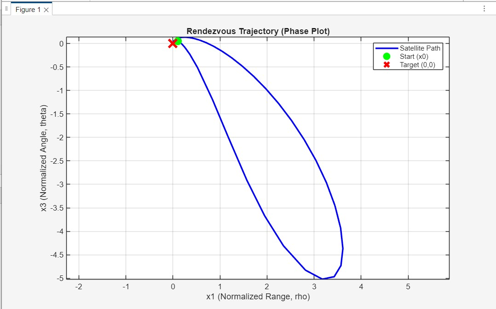

Luenberger-Based Rendezvous Control with Angle-Only Data
Output-feedback rendezvous controller for a chaser satellite using only line-of-sight angle measurement, with state reconstruction through a Luenberger observer and MATLAB/Simulink validation.
Academic project | Observer design, normalized state feedback, orbital simulation
Download Full Simulation Report (PDF)Measurement
y = theta
Angle-only sensing.
State vector
4 states
r, r_dot, theta, theta_dot.
Estimator
Luenberger
Full-state reconstruction.
Toolchain
MATLAB
Simulation and gain validation.
Engineering problem
Output-feedback rendezvous
Numerical conditioning issue
The physical model in meters and seconds produced unrealistic gains around 10^15. The project therefore used normalization before controller and observer design to obtain usable numerical behavior.
Control architecture
Feasibility analysis
Verified controllability and observability from y = theta, proving that the reduced sensing problem is mathematically solvable.
Normalized gain design
Designed stable K_norm and L_norm gains after non-dimensionalization, with observer dynamics set faster than controller dynamics.
Observer validation
Confirmed estimation error convergence e_x(t) -> 0, showing that estimated states track real states reliably.
Closed-loop validation
Validated that the real satellite state x(t) converges to zero and that the control input settles as the rendezvous completes.
Simulation evidence
What the plots confirm
The observer estimates converge to the true states, the estimation error goes to zero, the physical satellite states converge to the rendezvous target, and the control effort settles as the maneuver completes.
.jpg)




Conclusion and next steps
Result
The simulation demonstrates that an observer-controller rendezvous architecture can stabilize a 2D relative-motion model using only angular measurement. Normalization was the key step that made the numerical design physically usable.
Logical extension
- Extend the model to a 13-state 6-DOF formulation.
- Replace the linear observer with EKF or UKF sensor fusion.
- Control translation forces F and attitude torques tau together.